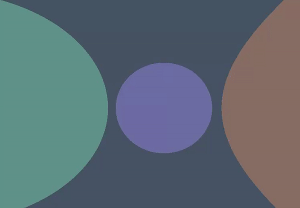

While trying to learn shader programming I got intrested in trying to make my own Ray-Marcher after seeing videos such as this on youtube about the technique. I was always facinated by 3d fractals and how they were made so when I stubled across videos talking about Ray-Marching I had to try it for myself. And as luck would have it I had just started learning OpenGL and had an environment built up where I could experiment with such shaders.
Ray-Marching experiments
My first attempts at Ray-Marching looked like this:
.gif)
Then I started playing around with the Mod() math function:
.gif)
In these few gifs I used very simple Phong-lighting to get some more intresting visuals, I then tried to use some sort of distance-based lighting since I get a distance to each point on every object anyways while Ray-Marching.

More advanced Ray-Marching experiments
First I tried making some translucent objects:
These work by instead of stopping the ray when hitting the surface of an object, continuing to march through and count how many steps are taken inside of every object, then using that counter as a multiplier on the color of that object. Ultimatly summing together all the "object colors" that were stepped through. This means that the thinner an object is, the less its color will contribute to the final summarized color of the pixel.
I then thought; what if I bounce the ray towards the normal of the surface hit?

This would ultimatley act like a sort of ray-casting real-time reflections. Although more cartoony and less realistic since the ray was not reflected around the normal of the surface, but rather straight towards it.


I think this ended up looking suprisingly cool. You can also see that I am stricktly summarizing the color of every surface in these examples ultimatley making reflections brighter and brighter as they bounce, wich is not realistic.
Ray-Marching in unity
I wanted to try making a Ray-Marcher in unity and not just my own engine, for fun. And thanks to various tutorials on screen-shaders in unity I managed to make this:


The most challenging part about this was intergrating the unity specific stuff into the raymarcher, such as the lighting and object clipping.
I also made a Mandelbulb, wich is the 3D version of the famous 2D Mandelbrot fractal